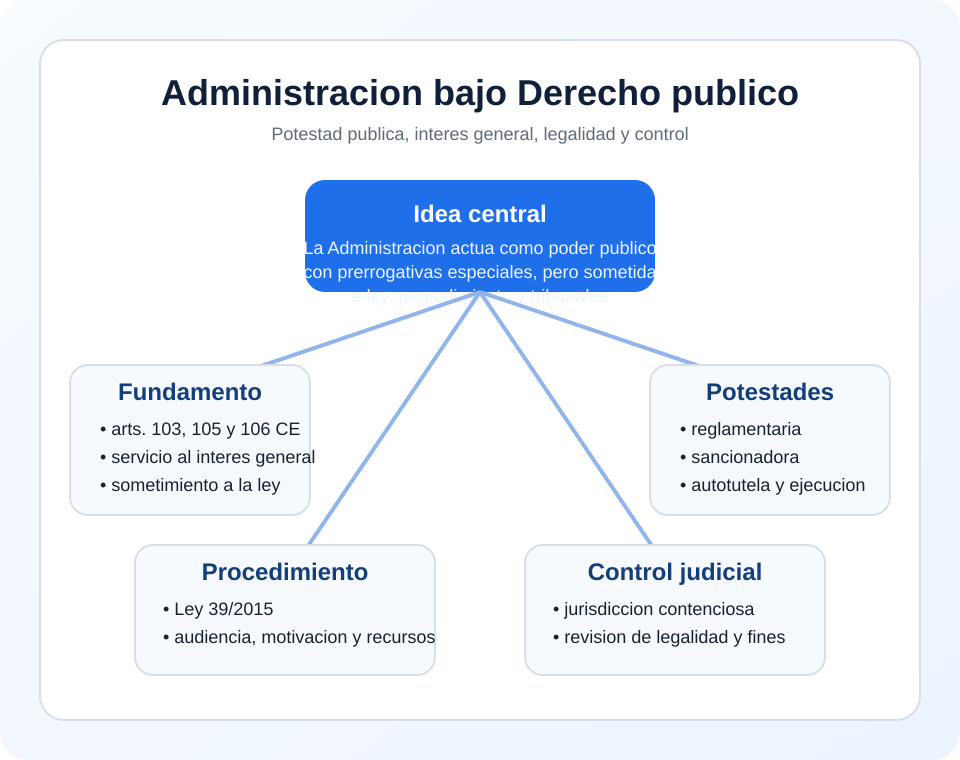

Interes general
La actividad se justifica por fines publicos y no por interes particular propio.
Tema 1 · Punto 2.2 · Resumen
La Administracion actua bajo Derecho publico cuando interviene como poder publico, con potestades juridicas especiales, al servicio del interes general y bajo un regimen reforzado de legalidad, procedimiento y control jurisdiccional.
Idea-clave de examen: hay Derecho publico cuando la Administracion usa potestades de autoridad y queda sometida a un control especialmente intenso.

Existe actuacion administrativa bajo Derecho publico cuando la Administracion interviene como sujeto investido de potestades de autoridad y no como un particular mas.
La actividad se justifica por fines publicos y no por interes particular propio.
Competencia, procedimiento, forma, motivacion y finalidad legitima.
Reglamentaria, sancionadora, expropiatoria, inspeccion y autotutela.
Recursos, revision y control contencioso-administrativo.
La Administracion puede aprobar reglamentos, imponer sanciones, dictar actos ejecutivos, inspeccionar y, en los casos previstos por la ley, ejecutar forzosamente sus decisiones.
Ninguna potestad se presume: toda potestad publica requiere atribucion legal.
| Poder administrativo | Garantia correlativa |
|---|---|
| Actos unilaterales y ejecutividad | Procedimiento, audiencia, motivacion y recurso |
| Potestad sancionadora | Legalidad, tipicidad, proporcionalidad y defensa |
| Autotutela administrativa | Control judicial posterior y medidas cautelares |
El control tipico corresponde a la jurisdiccion contencioso-administrativa, que revisa la legalidad de reglamentos, actos, procedimiento, competencia y finalidad de la actuacion administrativa.
Hay potestades de autoridad, acto administrativo, procedimiento y control contencioso.
Predominan contrato, negocio juridico y tecnicas comunes del trafico civil o mercantil.
Formula util para examen: la actividad administrativa se rige por Derecho publico cuando la Administracion actua como poder publico, con potestades especiales, al servicio del interes general y bajo legalidad, procedimiento y control judicial.